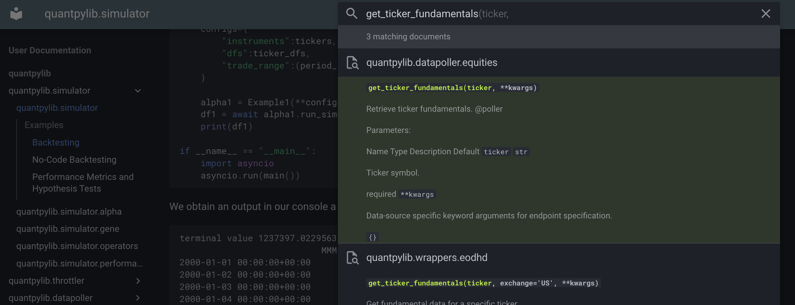

quantpylib.gateway
quantpylib.gateway is a quant module used for multi-exchage integration and account management.
The clients are categorized into their gateway classes, with current support for:
- account
- exchange
- executor
- orders
- positions
- trades
- transactions
The exchange clients supported are:
- binance
- hyperliquid
In general, a trader may have requirements for multi-exchange account management and broker integrations. Each exchange has its own authentication flow, order schema and account management - the gateway abstracts these concerns to provide a seamless interface for exchange integration.
Each gateway is derived from the base quantpylib.gateway.base.BaseGateway class and implements a set of methods,
and routs the requests to the specified exchange client and endpoints through the argument "exc". The supported exchange clients are written as wrappers
on the quantpylib.wrappers module, and their supported endpoints share the same function name
as in the gateways.
The different gateways are accessible via the master gateway class, given in quantpylib.gateway.master.Gateway object instance.
For instance, if we would like to get position data using the quantpylib.gateway.positions.Positions.positions_get,
we can do so by creating a obj = Gateway(...) instance, and calling obj.positions.positions_get(...,exc="binance").
The function call is only valid if it is supported by both the gateway type and the exchange client, which we can check by their matching
function signatures. In general each exchange has its own parameters to the vendor-specific endpoint, as well as different
specifications (such as limit orders through a specified price or a price-matching rule), so the library
provides a flexible variation between these specifications to support the different configurations for each external API - it would be
alot easier to understand through the given examples.
Note that each of the exchange client wrappers are also designed to be available for use as standalone Python-SDKs. Supported gateways and exchanges are added and updated frequently.
Note that the various endpoints and their matching function name-signatures can be easily looked up in the search-bar (top right): 
Examples
A dictionary containing configuration keys for different exchanges we
want access to is formatted as "source" : { arg1 : var1 , arg2 : var2 }, where each arg is the parameter to the wrapper object instance's constructor in quantpylib.wrappers.
An additional key-value for "alias" may be specified, which is used for reference to the exc parameter in the gateway methods.
We already have the keys in our .env file in the current working directory, and we will make the following imports:
import os
import logging
import asyncio
from dotenv import load_dotenv
load_dotenv()
from datetime import datetime
import quantpylib.standards.markets as markets
from quantpylib.gateway.master import Gateway
config_keys={
"binance": {
"alias": "binance",
"api_key": os.getenv("BIN_PUBLIC"),
"api_secret" : os.getenv("BIN_KEY"),
},
"hyperliquid": {
"alias" : "hyperliquid",
"address" : os.getenv("HYP_DEMO"),
"hyp_key" : os.getenv("HYP_KEY"),
}
}
async def main():
gateway = Gateway(config_keys=config_keys)
print(gateway.exc_clients)
await gateway.init_clients()
#...code goes between here...
await gateway.cleanup_clients()
if __name__ == "__main__":
asyncio.run(main())
Account
We are interested in getting some account balances. We can simply do
res = await gateway.account.account_balance(exc='binance')
res = await gateway.account.account_balance(exc='hyperliquid')
print(res)
{'equity_total': 1884.960586, 'margin_maintenance': 131.131965, 'margin_total': 262.26393, 'equity_withdrawable': 1622.696656, 'notional_position': 5232.9393}
We want to subscribe to updates to changes in the account's positions. This happens whenever there is an order filled. I subscribe to fill events, pass it a print-handler and let it sleep. Before the sleep times out, I made a market order on the web platform.
async def handler(msg):
print(msg)
await gateway.account.account_fill_subscribe(exc='hyperliquid',handler=handler)
await asyncio.sleep(10)
'''
I just put in a market order... and on my console:
{'channel': 'userFills',
'data': {'user': 'demodemodemodemodemodemodemodemodemodemodemodemo',
'fills': [{'coin': 'PENDLE', 'px': '4.1099', 'sz': '3.0', 'side': 'A', ...}}
'''
await gateway.account.account_fill_unsubscribe(exc='hyperliquid')
Exchanges
We may want to get contract specifications for valid orders:
res = await gateway.exchange.contract_specifications(exc='hyperliquid')
res = await gateway.exchange.contract_specifications(exc='binance')
print(res)
{'BTCUSDT': {'price_precision': 2, 'quote_precision': 8, 'quantity_precision': 3, 'min_notional': 100.0}},
'ETHUSDT': {'price_precision': 2, 'quote_pr...}
Executor
We want to make some limit orders:
res = await gateway.executor.limit_order(ticker='PENDLE',amount=-3,price=5.001,exc='hyperliquid')
res = await gateway.executor.limit_order(ticker='PENDLEUSDT',amount=-3,price=5.001,exc='binance')
Binance exchange allows limit order that does not need to specify price - instead, the price is set relative to the order book state through a price-matching rule. This is specified in the price_match argument to the quantpylib.wrappers.Binance.limit_order:
res = await gateway.executor.limit_order(ticker='PENDLEUSDT',amount=-3,price_match=markets.PRICE_MATCH_QUEUE_20,exc='binance')
{'status': 'ok', 'response': {'type': 'order', 'data': {'statuses': [{'filled': {'totalSz': '3.0', 'avgPx': '4.8122', 'oid': 1234}}]}}}
It is often useful to have order book data during the execution stage. We can get an order book snapshot:
res = await gateway.executor.l2_book_get(ticker='AAVE',exc="hyperliquid")
print(res)
res = await gateway.executor.l2_book_get(ticker='AAVE',exc='hyperliquid',depth=2,nsigfig=5)
print(res)
res = await gateway.executor.l2_book_get(ticker='AAVEUSDT',exc="binance")
print(res)
{'ts': 1716119324540, 'b': array([[8.7165e+01, 6.7900e+00],...])'a':array([[8.7190e+01, 3.4490e+01],[8.7198e+01, 8.3140e+01],...])}
{'ts': 1716119324940, 'b': (87.13, 48.1), 'a': (87.19, 34.49)}
{'lastUpdateId': 4633878434615, 'E': 1716119327150, 'T': 1716119327141, 'bids': [['87.090', '25.7'], ['87.080', '29.9'], ['87.070', '76.1'], ['87.060', '111.7'], ['87.050', '87.9'], ['87.040', '80.8'], ['87.030', '34.1'], ['87.020', '179.0'], ['87.010', '130.4'], ['87.000', '190.9']], 'asks': [['87.100', '0.2'], ['87.110', '8.8'], ['87.120', '27.9'], ['87.130', '37.2'], ['87.140', '118.4'], ['87.150', '57.9'], ['87.160', '40.3'], ['87.170', '83.7'], ['87.180', '130.3'], ['87.190', '26.4']]}
await gateway.executor.l2_book_subscribe(ticker='BTC',handler=handler,exc='hyperliquid')
await gateway.executor.l2_book_subscribe(ticker='BTCUSDT',handler=handler,exc='binance',depth=5)
await asyncio.sleep(3)
print(gateway.executor.l2_book_subscriptions(exc='hyperliquid'))
await gateway.executor.l2_book_unsubscribe(ticker='BTC',exc='hyperliquid')
print(gateway.executor.l2_book_subscriptions(exc='hyperliquid'))
await gateway.executor.all_mids_subscribe(handler=handler,exc='hyperliquid')
await asyncio.sleep(5)
await gateway.executor.all_mids_unsubscribe(exc='hyperliquid')
await asyncio.sleep(5)
Orders
We have order endpoints too. We can get order details using their ID:
print(await gateway.orders.order_get_by_id(id=12345,exc='hyperliquid'))
print(await gateway.orders.order_get_by_id(id=1,ticker="PENDLEUSDT",exc='binance'))
We want a snapshot of the orders page on the exchange:
print(await gateway.orders.orders_get(exc='hyperliquid'))
print(await gateway.orders.orders_get(exc='binance'))
{1234: {'ticker': 'PENDLE', 'order_id': '1234', 'limit_price': 5.001, 'amount_total': Decimal('-3.0'), 'amount_left': Decimal('-3.0'), 'timestamp': 000000}}
{1234: {'ticker': 'PENDLEUSDT', 'order_id': '1234', 'limit_price': 5.001, 'amount_total': Decimal('-3'), 'amount_filled': Decimal('-0'), 'tif': 'GTC', 'timestamp': 000000}}
If we need to maintain a local copy of the orders page, it would be more suitable to use event subscriptions. The orders_mirror and orders_peek use the underlying socket endpoints available to keep an updated local copy of it. We need to mirror once, then subsequent calls to peek will fetch the local copy. Additionally, we may want to attach a callback handler, which is invoked whenever the local copy of the order book is modified:
try:
await gateway.orders.orders_peek(exc='hyperliquid')
except ValueError as e:
print(e)
await gateway.orders.orders_mirror(exc='hyperliquid') #OR
await gateway.orders.orders_mirror(on_update=handler,exc='hyperliquid')
await gateway.orders.orders_mirror(on_update=handler,exc='binance')
print(gateway.orders.orders_peek(exc='hyperliquid'))
print(gateway.orders.orders_peek(exc='binance'))
await asyncio.sleep(100)
orders_mirror function, but we may prefer to receive just the realtime order event:
await gateway.orders.order_updates_subscribe(handler=handler,exc='hyperliquid')
await asyncio.sleep(100)
await gateway.orders.order_updates_unsubscribe(exc='hyperliquid')
Positions
We can get position details. As in the Orders gateway, we can request for a snapshot
res = await gateway.positions.positions_get(exc='binance')
res = await gateway.positions.positions_get(exc='hyperliquid')
print(res)
try:
await gateway.positions.positions_peek(exc='hyperliquid')
except ValueError as e:
print(e)
await gateway.positions.positions_mirror(on_update=handler,exc='binance')
await gateway.positions.positions_mirror(on_update=handler,exc='hyperliquid')
await asyncio.sleep(100)
print(gateway.positions.positions_peek(exc='hyperliquid'))
on_update's handler is called every time the mark-to-market value of positions change - not when there are changes in the positions held: